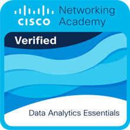

Certifications

Introduction to Data Science
Cisco Networking Academy
Issued June 16, 2025
• 6 Hours
Course Content:
- Fundamentals of data science
- Data collection and cleaning
- Basic statistical analysis
- Introduction to machine learning and artificial intelligence
- Data visualization techniques

Data Analytics Essentials
Cisco Networking Academy
Issued July 01, 2025
• 30 Hours
Course Content:
- Ethics and Bias in Data
- Data wrangling with Python
- Cleaning and Exploratory data analysis
- Transforming data with Excel
- SQL for data analysis
- Creating dashboards in Tableau
- Data storytelling

Python Basic
HackerRank
Issued Aug 31 2024
Course Content:
- Python syntax and basics
- Operators and control flow
- Functions and modules
- OOPS and scalar types
- Exception handling